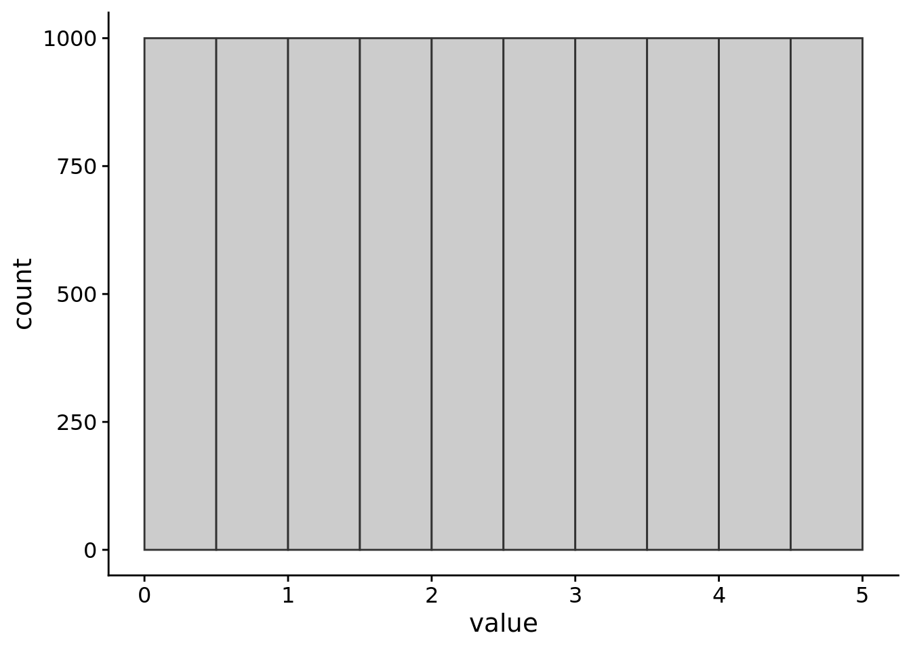

Lecture 6: Describing measurements I
Measures of central tendency
In Lecture 4 we started talking about how quantitative methods deal with measurement, and we started talking about putting numbers to things. In today’s lecture, we’re going to start talking about what we actually do with these numbers, and how to make a little more sense of measurements in general. This lecture will be the first in a set of lectures where we’ll talk about samples and populations, how to describe them, and how to understand the relationship between them. A lot of these ideas are interconnected, so we’ll be touching on some ideas multiple times. But hopefully each time we’ll be able to gain a richer understanding.
The first thing we’ll want to do when we’ve collected a set of measurements is to describe them in some way. One way to do this is to work out what the typical value is. And it’s this kind of description that we’ll turn our attention to first. We’ll start by looking at three different ways we can describe the typical value in a set of numbers.
Measures of central tendency
What we mean by the typical value is not always clear. For example, in Figure 1 we can see the average annual salary (in US dollars) for a set of 78 countries. Each bar of the plot represents the number of countries in the given salary bracket ($0–$10k, $10-$20k, …).
From the plot, we can see that there are a lot of countries where the average annual salary is less than USD 30,000. There are also a handful of countries where the average annual salary is more than USD 100,000. What would you consider the most typical annual salary? The bracket with the most countries in it? If so, that would mean the most typical salary is between $0 and USD 10,000 per year. Or maybe we should pick the value where half the countries have a lower average salary and half the countries have a higher one? Choosing this option leads to an estimate of the most typical salary of $12,855 USD per year.
As you can see, depending on how we define the most typical value, we get different answers. We’ll cover the three main ways of defining the typical value or average. Together, these ways of describing the typical or average value are known as measures of central tendency.
Mode
The mode is a term that refers to the most frequent value in a set of measurements. This is the kind of average we discussed above when we said the most typical salary is between USD 0 and USD 10,000 a year. The easiest way to spot the mode is to draw a plot like the one we did in Figure 1 and then look for the tallest bar.
A set of numbers can have one or more modes. If it has one mode, then it is said to be unimodal. Bimodal means it has two modes. If it has three or more modes, then it’s usually called multimodal. Some examples of this are shown in Figure 2.

Important
The mode is the only definition of typical value that works for data that is measured at the nominal/categorical level (see Lecture 4).
When it comes to truly continuous variables, such as height, the mode is often not very informative. Why? Take the example of reaction time. Is it likely that two people will have exactly the same reaction time, right down to the exact number of nanoseconds? Or would each reaction time be unique? If so, each value in the dataset would be unique and, therefore, each value in the data set would be the mode. For this reason, the mode is rarely used for continuous variables measured at the interval or ratio levels.
Average salary is a continuous variable, but we’ve turned it into a discrete variable by placing measurements into discrete ranges. By doing so, we can make the mode useful.
Median
The median is the second kind of average we talked about above; the middle value where half the measurements are above that value and half the measurements are below. To find the median, we first need to sort our data. Let’s say we roll a 6-sided dice 5 times and get the following: 3, 4, 6, 1, and 1
To calculate the median, we’ll do two steps:
Sort the data from smallest to largest: 1, 1, 3, 4, 6
Find the mid-point: We have five observations so the third one in the sorted sequence is the mid-point.
Out of the five rolls the median is 3 (and the mode is 1). If we had an even number of observations then the median would be the half-way point between the two mid-point values. For example, if we instead rolled the dice 6 times and got the results 1, 1, 3, 4, 4, and 6 then the median would be the midpoint between 3 and 4, or 3.5.
Figure 3 below shows the annual salary in USD for each of the countries in the dataset, sorted from lowest to highest. Notice, that this time, we’re not grouping countries into salary brackets and looking at how many there are in each, as was the case in Figure 1. Here, each bar represents a country.
Because we have an even number of countries in our dataset (78), there are two mid-points. These are highlighted in orange in Figure 3. To get the median annual national salary, we need to find the value half-way between Romania and Venezuela, which in this data set turns out to be $12,855 USD.
Important
To be able to calculate a meaningful median, the variable must be measured on at least the ordinal level. For example, if we had categorical data like eye colour, then it wouldn’t make sense to ask for the median between a set of four blue eyes and 3 green eyes.
Mean
The arithmetic mean is what most people are referring to when they talk about the average. You can work out the mean of a set of numbers by adding up all the values and then dividing this by the number of values in the data set. Mathematically, you can represent this with the formula shown in Equation 1, below:
\[\bar{x}=\frac{\displaystyle\sum^{N}_{i=1}{x_i}}{N} \tag{1}\]
This formula just tells use that the mean (\(\bar{x}\)) is equal to the sum of all the numbers (\(\sum^{N}_{i=1}{x_i}\)) divided by the number of values in the dataset (\(N\)).
Note
We use the symbol \(\bar{x}\) (pronounced x-bar) to represent the mean of a sample of data. We use the symbol \(\mu\) (pronounced mew) to represent the mean of the population (see sample means and population means below).
In fact, we usually use Greek letters for population values (parameters) and Latin letters for sample value (statistics).
Mean vs Median
Both the mean and median have their advantages and disadvantages. The mean is easier to work with from a mathematical point of view. And for this reason, most of the statistical methods we’ll be learning about are based on the mean.
Compared to other measures of central tendency, means taken from different samples of the same population tend to be more similar to each other. (We’ll talk more about samples and populations below). If, on the other hand, we calculated medians for different samples from the same population, there would be more variability in the values we’d get.
Turning back to our dice example: If we took the median and the mean of 5 dice rolls, and we did this over and over, the mean values would be more bunched around 3.5 with very few values less than 2. The median values would still be centred around 3.5, but we’d get more values less than 2, so they would be more spread out.
There are also some downsides to the mean relative to the median. The primary one is that the mean is sensitive to extreme values in a way that the median is not. This means that, even if we have a really big sample size, adding a single value that is extremely big or extremely small can shift the mean dramatically. This is not the case for the median.
For example, let’s say we have a list of numbers: 5, 3, 1, 7, 10, 4, 5. This list of numbers has a median of 5 and a mean of 5. If we added a value of 1000 to this list, then our new median would be unchanged at 5, but our new mean would be 129.375. You can explore the influence of data points on the mean and the median in Explorable 1.
Sample means and population means
So far we’ve talked about describing the typical value in a set of measurements that we have—our sample. But one of the key things that we want to do with statistics is to make inferences about populations from the information that we get from samples. That is, we often want to make a judgement, or draw a conclusion, about an aspect of the population when all we have access to is a sample. We’ll get to more formal definitions of populations and samples shortly, but first, let’s make things more concrete by introducing an example.
Let’s say you’re interested in the average height of people in the UK. The “easy” way to find an answer to this question is to measure all the people in the UK and then work out the average height. Doing this will give you the exact answer to your question. But if you can’t measure everyone in the UK, then what do you do?
You could instead select a smaller group, or subset, of people from the UK. You could then measure the height of people in this group, and then try to use this information to figure out plausible values for the average height of people in the UK.
In this example, the group (or groups) you’re making claims about is the population—you want to make claims about the average height of people in the UK. And the sample is a subset of this population—the smaller group of people that you were eventually able to measure.
It’s important to note that there isn’t a single population. What counts as the population will depend on the claim you’re making. For example, let’s say I’m interested in testing the claim, “Do people in East Sussex show an interference effect on the Stroop task?”. Here the population would be people in East Sussex. If, however, I want to make claims about people in general, then the population might be all living humans.
Theoretical populations
We often talk about populations as if they’re a set of actually existing things that we can take our sample from—for example, all living humans. But populations don’t have to be sets of actually existing things. Instead, they can be the set of possible things from which our samples can be drawn. This is a fairly advanced idea, so it might seem a little confusing for now. But keeping this idea in the back of your mind will help statistics make more sense as you progress through your degree. Because this idea is a little confusing, an example might help.
Let’s say we want to collect a sample of 2 dice rolls. To collect our sample we take a die and roll it twice. From this we can easily work out the typical value—that is, the mean—just as we did above.
Our sample is the set of 2 dice rolls that we’ve collected. But what is our population? One way to think of our population is as the set of possible outcomes that could occur if we rolled a die twice. What is the typical value of this population? It turns out that we can actually work this out.
To work it out we would do something like the following:
This diagram is a little complex, so we’ll step through it. Each colour represents rolling a different number. So, for example, the blue circle means that you rolled 1, the green is rolling a 2, the yellow is rolling a 3, black for 4, white for 6, and purple for 6.
The diagram shows all the possible things that could happen if we rolled the dice twice. So for example, one thing that could happen is we could roll a 1 (blue) followed by another 1 (blue). Or we could roll a 1 (blue) followed by a 2 (green).
So how do we work out the typical value? First we work out how many of the sequences sum up to 2 (the minimum total you can get with two dice rolls). We then count up the number of sequences that sum up to 3, to 4, 5, and so on all the way up to 12 (the maximum total you can get with two dice rolls).
Expand to see all the possible outcomes
Warning: `cross_df()` was deprecated in purrr 1.0.0.
ℹ Please use `tidyr::expand_grid()` instead.
ℹ See <https://github.com/tidyverse/purrr/issues/768>.| 1st Roll | 2nd Roll | Total |
|---|---|---|
| 1 | 1 | 2 |
| 2 | 1 | 3 |
| 3 | 1 | 4 |
| 4 | 1 | 5 |
| 5 | 1 | 6 |
| 6 | 1 | 7 |
| 1 | 2 | 3 |
| 2 | 2 | 4 |
| 3 | 2 | 5 |
| 4 | 2 | 6 |
| 5 | 2 | 7 |
| 6 | 2 | 8 |
| 1 | 3 | 4 |
| 2 | 3 | 5 |
| 3 | 3 | 6 |
| 4 | 3 | 7 |
| 5 | 3 | 8 |
| 6 | 3 | 9 |
| 1 | 4 | 5 |
| 2 | 4 | 6 |
| 3 | 4 | 7 |
| 4 | 4 | 8 |
| 5 | 4 | 9 |
| 6 | 4 | 10 |
| 1 | 5 | 6 |
| 2 | 5 | 7 |
| 3 | 5 | 8 |
| 4 | 5 | 9 |
| 5 | 5 | 10 |
| 6 | 5 | 11 |
| 1 | 6 | 7 |
| 2 | 6 | 8 |
| 3 | 6 | 9 |
| 4 | 6 | 10 |
| 5 | 6 | 11 |
| 6 | 6 | 12 |
After we’ve done this we’ll see that more sequences add up to 7 than any other total. So we could say that the typical outcome is an outcome that leads to the two dice adding up to 7. If we had a set of 2 dice rolls where the sum was 7, then the mean would be 3.5 (because 7 ÷ 2 = 3.5). So the population mean for two dice rolls is 3.5.
We’ll talk more about this idea when we start talking about distributions, but for now this basic description should suffice.
We can work it out because we know something about the process that gives rise to our data (We’ll talk more about how we know this in a later lecture on probability). That is, we can characterise the process that gives rise to the samples, and our samples are just a set of instances of data generated by this process.
Taking this idea and applying it to the Stroop task, where we’re interested in humans in general, we might want to say that our population isn’t just all living humans. Instead, we might want to say that our population is all possible humans that might have lived, might be living now, and will live in the future. Or that our samples are just some instances of data generated by some process that goes on in people’s brains when they do the Stroop task. Unlike the dice roll example, we don’t know the characteristics of this process. This means that we couldn’t, for example, draw out what the population would look like. But the point of doing science and statistics is so that we can use the information from samples to start to characterise this process and start to work out what the population might look like. But how do we go from samples to populations?
The relationship between samples and populations
Let’s assume that we have explicitly defined our population as all people in the UK, and we’ve collected a sample by taking measurements from a subset of this population. What is the relationship between this sample and the population from which it was drawn?
The sample should resemble the population in some way. Most often we’re interested in knowing something like: “What is the typical value (i.e., the mean) of the population?“ So for our height example, this would mean that we’re interested in knowing the mean height of the population. Ideally then, the average height of our sample should resemble the average height of our population. But if we don’t know the average of our population, then how will we know whether our sample resembles it?
For purposes of illustration, let’s say that I actually know what the population looks like. We’ll say that adults in the UK range in height between 78cm and 231cm, but that the average height of an adult in the UK is 170cm. So our population mean is 170cm. Now let’s collect a sample of data. We’ll talk more about the influence of sample size in a later lecture, but for now let’s just say that we collect a sample of 50 people. And let’s say that we don’t only collect one sample, but that we collect a sample of 50 people over and over again. In Explorable 2 you can see the average height of each of our samples of 50 people, with the solid line showing the population mean.
What do you notice in Explorable 2? The sample means don’t always line up exactly with the population mean. Sometimes the sample mean is higher and sometimes the sample mean is lower. It moves around a bit from sample to sample. Because it moves around, and because we don’t know the population mean, this tells us that on any particular sample we won’t know whether the sample mean is the same as the population mean.
The average of the sample means
But let’s think of things from a slightly different perspective. Let’s treat the mean of each sample of 50 people as a measurement. We’ll now take a “sample” of these measurements. That is, we’ll measure the height of 50 people and we’ll work out the average height. This might be something like 168 cm. We’ll then measure another 50 people, and we’ll work out the average height, which might be something like 175 cm. We’ll then work out the average of these two averages (171.5 cm). We’ll do this over and over recalculating our average of averages after each new sample of 50 people. In Explorable 3 we can see what happens to our average of our sample of samples. What do you notice?
That’s right, as we carry on collecting more and more samples of samples the average of these will eventually line up and match the population mean. This shouldn’t be completely surprising. If we collect enough samples, and combine them all together, then eventually we’ll have sampled the entire population.
But the point I want you to take away from this demonstration is the following: This tells us that even though we don’t know whether the mean of any particular sample is the same as the population mean, the sample mean will on average be the same as the population mean. We’ll touch on this idea more in future lectures when we talk about the sampling distribution, but for now this simple idea is all you need to know.
Check your understanding
Use this quiz to make sure that you’ve understood the key concepts.